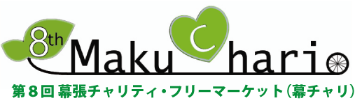

開催のお知らせ
2012年1月
各位
2012年5月19日（土）・20日（日）、神田外語大学キャンパス（千葉市幕張）を舞台として、第8回目となる「幕チャリ（幕張チャリティ・フリーマーケット）」を開催します。
「幕チャリ」は、”地域活性化と社会貢献”を目的とする神田外語大学の学生ボランティア団体『CUP=Creative Universal Peace』が主催するチャリティ・イベントです。学生・大学・地域社会・企業など多岐にわたるセクターと連携、協働し、「物の寄付・時間の寄付・お金の寄付」という３つの要素をフリーマーケット形式で連動させ、“誰もが簡単に楽しくできる社会貢献”を目指しています。
2005年の第1回開催時から、毎回売り上げを信頼ある非営利の社会企業団体へ寄付し、よりよい社会・世界の実現に寄与してきました。第2回から第6回は公益信託「アジア・コミュニティ・トラスト（ACT）」へ継続して寄付を続け、その総額は750万円を超えています。この寄付金は、アジアの人々が社会開発、教育の充実、医療福祉の向上、環境の保全などを目指して展開する自助努力の支援のため、現地の団体との協働により幅広く役立てられています。
また、第７回にあたる昨年の「東日本大震災復興支援 緊急 幕チャリ」では、売上金205万円をシードマネーとして活かし、神田外語グループ全体で被災地における教育支援に取り組みました。
第8回幕チャリでは、こうした経験を生かし、新たな社会的価値創出の場のいっそうの拡充、またこの活動にかかわる人々のさらなる拡大を目指して、これまで以上の努力を重ねてまいります。今回は「アジアへの支援を念頭に置きながら、東日本大震災の復興支援も忘れない」ことを目標に、被災地の方々による物品販売等の場を設けるなど震災復興支援に取り組みながら、売上金を公益信託「アジア・コミュニティ・トラスト（ACT）」に寄付することでアジアの自立支援も再開してまいります。
ぜひとも皆様方のご支援、ご協力、ご参加を賜れますよう、よろしくお願い申しあげます。
神田外語大学学生ボランティア団体「CUP」
＜第８回幕チャリ＞
日時：2012年5月19日(土）・20日(日）
10時-15時
会場：神田外語大学キャンパス(千葉市幕張) 雨天決行
主催：神田外語大学CUP
協力：神田外語大学・神田外語大学異文化コミュニケーション研究所
＜お問い合わせ先＞
神田外語大学CUP （代表：渡辺 彰美）
〒261-0014 千葉県千葉市美浜区若葉1−4−1 神田外語大学 異文化コミュニケーション研究所気付
CUP学生ブログ：マクスタ http://makuchari.makusta.jp/